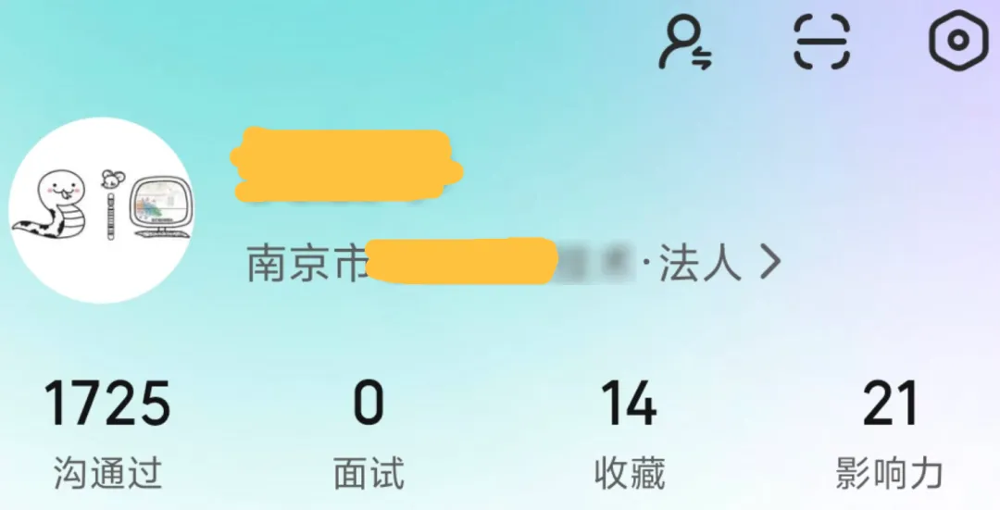

看了1700份简历后，聊聊我眼中的生信就业
原文：https://mp.weixin.qq.com/s?__biz=MzAwMzIzOTk5OQ==&mid=2247535066&idx=4&sn=d742441075cacd165ae6ae1617b8a9f9&chksm=9b3c308aac4bb99c284c7fc611bded98250953081d13e33917073502bae6a43d7e391b921ba5#rd 合集：求职/求学/招聘
一、又一年春招
生信基地长期招贤纳士：Biomamba生信基地秋季招聘开启！恰好离我们第一次发布招聘以来过去了一年。每天Biomamba至少都会收到五份简历，一年来已经拜读过1700+的简历，恰逢春招正盛，简单聊聊我眼中的生信就业以及面试技巧。

也欢迎大家加入2025就业交流群二、尴尬
生信的这个专业，Biomamba觉得有一些尴尬的地方：1、还算是个"新"专业按照Biomamba的检索结果，2002年哈工大创建了世界首个生物信息学本科专业[1]，也就是说，今年毕业的本科生，可能和这个专业差不多年纪。那么，这意味着生物信息学专业的导师中，也有很多是“半路出家” 2、有一·小众相对于大类学科来说，生物信息学这样的学科稍微有些小众。例如你学习人工智能、软件工程、生物这样的专业就业范围可能会宽很多，并且与本专业相关。而生物信息学专业的同学，想选择与本专业完全相关的工作，可选范围就比较窄了。
3、交叉学科=啥也不精+没有岗位？生物信息学是个生物科学、计算科学、数据科学交叉融合的学科，有个尴尬的点在于，研究这个领域的人很多，但大都不是科班出身。而是像Biomamba这样，医药领域的牛马半路整起了编程，一毕业发现药企根本就没啥生物信息学的岗位。其它诸如农学、环境、微生物等专业的同学我相信可能也有类似的经历或行业感受。
4、学历、学历、学历还是拿AI举例，这类学科往往存在日常的应用场景，生物信息学的实际使用场景则大都停留在科研端。就像某雪峰老师说的那样，“你想当科学家，那你不能是个本科生吧”。这就意味着，生物信息学领域的筒子们，卷学历的现象比较严重，为了参加科研工作，不得不去整个研究生的身份。好在这两年的行情，啥行业都得卷学历，心里稍微能平衡点
2、有一·小众相对于大类学科来说，生物信息学这样的学科稍微有些小众。例如你学习人工智能、软件工程、生物这样的专业就业范围可能会宽很多，并且与本专业相关。而生物信息学专业的同学，想选择与本专业完全相关的工作，可选范围就比较窄了。
3、交叉学科=啥也不精+没有岗位？生物信息学是个生物科学、计算科学、数据科学交叉融合的学科，有个尴尬的点在于，研究这个领域的人很多，但大都不是科班出身。而是像Biomamba这样，医药领域的牛马半路整起了编程，一毕业发现药企根本就没啥生物信息学的岗位。其它诸如农学、环境、微生物等专业的同学我相信可能也有类似的经历或行业感受。
4、学历、学历、学历还是拿AI举例，这类学科往往存在日常的应用场景，生物信息学的实际使用场景则大都停留在科研端。就像某雪峰老师说的那样，“你想当科学家，那你不能是个本科生吧”。这就意味着，生物信息学领域的筒子们，卷学历的现象比较严重，为了参加科研工作，不得不去整个研究生的身份。好在这两年的行情，啥行业都得卷学历，心里稍微能平衡点 。
。
三、利好
既然选择坚定不移的走这条路，Biomamba自然也是看好生物信息学这条赛道。生信就业还是有不少利好的：1、收入↑谁参加工作不是为了能有更好的生活呢，相较于药学、农学、医学、生物领域的“湿式验”人群来说，生信相关的“干实验”岗位薪酬往往更高。如果能看看跨界的岗位，例如生物信息学与AI、云计算的融合催生的新兴岗位：DeepMind将蛋白质结构预测列为战略级方向，华为、腾讯等科技公司也有设立生物信息学相关岗位。相信这些提供的岗位收入，会比传统医药、农学、环境相关岗位的收入多出一些。2、自由度这其实还是“干/湿实验”的差别问题，至少做生物信息学实验，大部分时间坐在电脑前。大家不需要穿着白大褂、带着丁腈手套，动不动面对实验机器，从人类社会蒸发好几个小时。3、生物安全这个不用多说，电脑那点辐射对大家的伤害大概率比试剂要小的多：一个R语言统计例题4、岗位缺口大尤其是在科研端，相信大家经常见到招聘硕博、博后、科研人员的声明中提到：生物信息学背景、有scRNA-seq/空转/ATAC。。。数据处理经验者优先。相对于其它行业的供需关系，生信专业大概率还是有些卖方市场的性质。已经有很多团队/单位跟我表示过缺人手，感兴趣的求职者可以看看我们的合集：求职。5、门槛高、素人勿进对于其它行业(计算机/数理统计相关专业除外)的工作者而言，身为交叉学科的生物信息学入行，需要一定的门槛；没有数年的实战经验基本无法参与工作。学完医药/农学等生物类学科，还得学一遍编程，我们的教程下面尝尝就有人吐槽生信难学。各平台也不希望，招个小白进来培养个一年半载。当然这也意味着，你活得的岗位和收入相对稳定。
四、简历
任何行业都一样，简历是你获得工作机会的第一块问路石头，请各位务必要重视自己的简历。在我看来，一份好的简历应该：0、个人能力一份优秀的简历自然源于优秀的你，无论寻求哪份机会，你都会感谢曾经努力的自己。本硕博92的教育背景、高分的SCI论文、精通更多的技能、获得更多的专业证书，自然会让你拥有一份不俗的简历。1、简洁简历一页就够，过犹不及。展示你的核心经历与技能，与意向工作无关的细节少展示或不展示。见过用一半的篇幅来写兴趣爱好的，HR也很忙，大概率没空关心你喜欢什么。N作、未发表的论文、未实质性参与的项目、未取得学位的联培等，列的越多就意味着你的有效信息越少，并且让HR感到夸大与虚浮。2、精准大家可以准备一份简历模板，针对你的投的岗位，进行内容、文件名的精准修改（翻译：见人说人话）。需要突出教育背景、学术经历、技能掌握情况、职业规划，最好分模块、分点展示这些关键信息。3、别有低级错误错别字、排版乱码、信息缺失、联系方式错误等错误是最常见的，还有很多拿升学的简历来面试岗位的，这些都理不顺、写不对，显然HR也没有信心认为你能够胜任这份工作。4、真实有效我能理解大家希望获得工作机会的心情，但是简历中的内容得真实有效吧。有写自己会一大堆分析，结果一问三不知的，连自己声称掌握的软件，是基于何种编程语言都不清楚；有说自己发过XX文章，结果一问一搜只能承认撰写中、Under Review的。真实有效，才能减少沟通成本，纸包不住火；也别把面试官当傻子。
五、面试技巧
一般情况下，如果求职者拥有一份匹配的简历，顺利进入了面试环节，有以下技巧与建议供你参考：1、个人展示物料如果参加线上会议，可以做一份个人展示的PPT，包含教育经历、科研经历、奖惩情况、熟练掌握的技能、求职意向、职业规划、个人特长(不同与爱好)。遇到过很多没有物料空谈的同学，这样面试者很难掌握有效信息，也无法与你针对性的沟通并推进岗位offer发放。2、良好的表达能力无论是科研还是工作，生信人员绝不是只与数据交流，更多的是要把生信数据转换为有价值的图表、论据。良好的表达能力一定是你面试时的加分项。3、答不上的问题不要乱答既然面试官准备了问题，她/他也一定有既定答案，大概率不会问你一个面试官自己都不了解的问题。所以，答不上来的问题不要乱答。上面已强调过大家的简历需要真实有效，否则针对简历内容提问时，很容易露馅。不知道的问题大可大方承认，互联网时代的学习渠道也很多，可以聊聊自己将如何解决这些自己不会的内容。4、针对性表达相信没有人发布招聘会不写岗位要求，大家可以根据个人情况，描述自己适配该岗位的优势、入职后有怎样的工作规划。面试官一天会面很多人，提问也会累；无论是面试还是实际工作中，大家都会更喜欢主动的人。
最后聊聊
收了那么多封简历，面了那么多人，其实啥人都见过。有简历混乱的、有不看岗位乱投的、有谎报学历的、有这也不会那也不会还嫌工资低的、有纯业外人士一定要来公司学习的、有一定要工作但是不想工作的（很难描述了）。
都说是就业寒冬，但从我作为面试者的视角看来，事实上很多求职者并没有做好就业的准备。如果你能用心的做好上述的几点，其实获得一份理想的工作还是很容易的。欢迎找Biomamba练手，无论大家是否会参加Biomamba生信基地秋季招聘，都欢迎把简历发送到邮箱1913507043@qq.com。备注“面试求助”，我可以配合你完成一轮线上面试并给你提一点我的小看法 。参考：[1]https://med.hit.edu.cn/zyjs/list.htm
。参考：[1]https://med.hit.edu.cn/zyjs/list.htm
如何联系我们

 留一个领取资料、开箱即用的单细胞分析镜像的微信号[Biomamba_zhushou]，方便各位随时交流。同时我们也构建了交流群矩阵，欢迎大家入群讨论。
大家可以阅读完这几篇之后添加给生信入门初学者的小贴士
没有检索，就没有发言权
留一个领取资料、开箱即用的单细胞分析镜像的微信号[Biomamba_zhushou]，方便各位随时交流。同时我们也构建了交流群矩阵，欢迎大家入群讨论。
大家可以阅读完这几篇之后添加给生信入门初学者的小贴士
没有检索，就没有发言权
已有生信基地联系方式的同学无需重复添加

 您点的每个赞和在看，我都认真当成了喜欢
您点的每个赞和在看，我都认真当成了喜欢